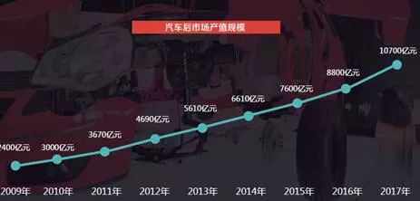
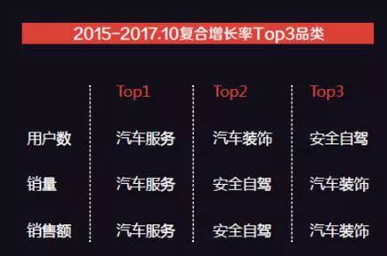
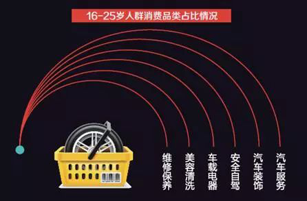
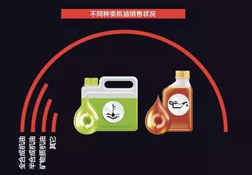
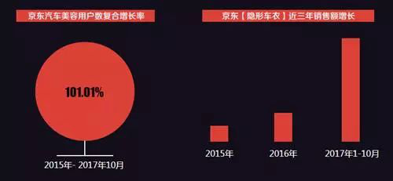
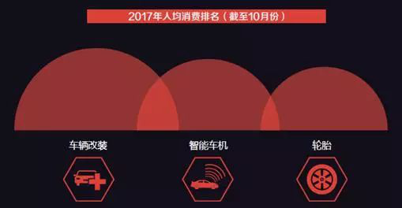

近日，京东研究院发布了《汽车后市场线上消费报告2017》表明，我国的汽车后市场线上化可开垦空间仍然很大。
随着中国汽车保有量达到两亿辆，汽车后市场在2017年-2018年即将进入万亿时代;在这个万亿蛋糕上，汽车后市场的“线上化”可谓广阔天地，大有作为；当前汽车后市场线上消费呈现出服务化、品质化、 生活化、功能化的四大消费升级趋势……这是《2017汽车后市场线上消费报告》中，21·京东BD研究院为我们展示的一组趋势。
报告数据显示，80后人群成为线上汽车后消费的主力军，90后用户增长迅猛。这些已深度养成互联网消费习惯的80后、90后年轻群体，目前购买力尚处于成长阶段，随着年龄不断成长和收入增强， 他们的汽车消费能力将得到更大释放，并将对汽车后市场发展产生深刻影响。

汽车后市场在2017年-2018年即将进入万亿时代。
(来源：中国汽车流通协会及21·京东BD研究院根据公开资料估算)
趋势一 服务化，“线上产品+线下服务”模式持续扩容
线下维修保养服务难以标品化、线上化，场景不可替代……这些曾经是汽车服务不可能实现电商化的论点，而如今的线上消费趋势却将它彻底证伪。京东大数据显示， 汽车服务正在成为京东增长最快的汽车后市场消费方向，汽车服务近三年来的销售总额、销量和消费人次增长率在汽车消费品类中均排名第一。

汽车服务正在成为京东增长最快的汽车后市场消费品类。
(来源：京东大数据)
“产品+服务”模式在京东汽车消费品类上线已近一年时间，车主们下单数量增势明显。京东数据显示，今年10月京东在轮胎类产品消费绑定服务的订单量渗透率较年初提升了近10倍， 胎压监测实物绑定服务的订单占比渗透率提高达60倍，从爆发式增长数据可以看到该商业模式在汽车后市场可观的消费潜力。
在正在兴起的线上汽车消费中，年轻群体对于汽车服务表现出了更高的接受度。京东大数据显示，汽车服务在16-25岁人群的汽车相关品类消费中占比最高，达16.44%。 年轻消费群体的成长也终将改变传统的汽车后市场消费习惯。

汽车服务在16-25岁人群的汽车相关品类消费中占比最高。
(来源：京东大数据)
趋势二 品质化消费诉求提高
在消费升级的大背景下，线上汽车消费也发生着明显变化。车主们对汽车维修、保养等必需品的品质要求进一步增强，原厂配件、大品牌配件比例在不断提升。 这既是车主们加大汽车后市场消费比重的结果，也是当前居民消费升级趋势下的真实写照。
以机油这一汽车必需消费品为例，京东大数据显示，不同类型机油消费占比特点非常明显，今年前10个月性能更为出色的全合成机油在京东机油销量中占到70%。必需品消费呈现出高端化趋势。

今年前10月，性能更为出色的全合成机油在京东机油销量中占到70%。
(来源：京东大数据)
随着汽车普及率提高，在诸如汽车美容、汽车装饰等非必需消费上，车主们也显示出更多消费意愿。京东大数据显示，2015年-2017年10月间，在京东进行美容消费的车主年复合增长率超过100%。另外， 作为较为昂贵的商品，隐形车衣销售呈现爆发式增长，2017年截至10月底，隐形车衣的销售额就达到了2016年全年的3.58倍。

近三年，京东美容消费车主的复合增长率超过100%，隐形车衣销售也呈现爆发式增长。
(来源：京东大数据)
趋势三 生活化，“车生活”消费增速迅猛
作为人们生活的一个重要场景，围绕“车生活”而来的创新车品销售也呈现亮点。在京东平台上，无论是智能车机还是车载净化器、车载冰箱等产品的销售爆增，都能证明汽车已不仅仅是代步工具， 还在成为人们生活场景的重要延伸。
以集ETC通行、3G无线通信、GPS导航、出行导游、购物、娱乐影音等多种功能于一身的车载终端智能车机为例，2017年前10个月，京东车主用户在智能车机上的人均年消费额仅次于车辆改装排在第二， 已高于轮胎消费。这显示出网购车主对于智能化车生活的期望和消费支出在不断提升。

京东车主用户在智能车机上的人均年消费额，仅次于车辆改装排在第二。
(来源：京东大数据)
趋势四 功能化，无人驾驶、车联网技术刺激新需求
消费升级带来的汽车文化普及，以及车联网时代的到来，都引领着新时代下新兴的汽车用品市场崛起。从智能车机的产品趋势可以看出，智能车机与平板电脑的距离正被不断拉近， 后期甚至还可能出现汽车专用的软件商店，而地图服务、广告、APP生态将会诞生。
作为中国电商行业领军企业，京东进入汽车市场已有5年时间。5年时间里，消费者已接受从简单的汽车香水、座椅、座垫的在线选购，到根据汽车型号选择对应机油和配件，再到选择令人放心的线下门店安装和服务， 网购汽车用品已在向网上汽车服务逐渐升级。“商品+服务”一站式消费模式的不断拓展完善，在为用户带来消费体验的质变提升同时，也为汽车后市场带来新一轮成长和机遇。。